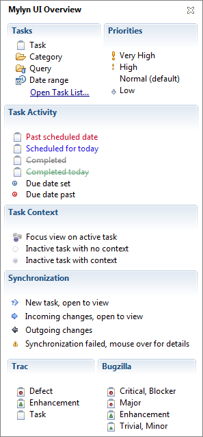

| Mylyn User Guide | ||
|---|---|---|
|
|
||
| Installation | ||
For tutorials and articles on using Mylyn refer to the Publications page. The role of this document is to provide up-to-date documentation on a listing of the key Mylyn features and is not intended as a tutorial, and to allow users to contribute additional documentation.
Mylyn is a task-focused interface for Eclipse that makes working with very large workspaces as easy as working with small ones. Mylyn extends Eclipse with mechanisms for keeping track of the tasks that you work on. A task is defined as any unit of work that you want to recall or share with others, such as a bug reported by a user or a note to yourself about improving a feature. You can store tasks locally in your workspace, or they can come from one or more task repositories. To connect to a task repository, you must have a connector that supports that repository. (A task repository is a bug/ticket/issue tracker such as Bugzilla, Trac, or JIRA).
Once your tasks are integrated, Mylyn monitors your work activity on those tasks to identify information relevant to the task-at-hand. Mylyn monitors Eclipse and captures your interaction in a task context. System artifacts such as files, types, methods, and fields get assigned a degree-of-interest based on how recently and frequently you interact with them. This results in uninteresting elements being filtered from view within Eclipse, allowing you to focus on on what is important. From this, Mylyn creates a task context, which is the set of all artifacts related to your task. These can include methods you have edited, APIs you have referred to, and documents you have browsed. Mylyn uses this task context to focus the Eclipse UI on interesting information, hide what's uninteresting, and automatically find what's related. Having the information you need to get your work done at your fingertips improves your productivity by reducing the time you spend searching, scrolling, and navigating. By making task context explicit, Mylyn also facilitates multitasking, planning, reusing past efforts, and sharing expertise.
Task List view
Ctrl+C: copy taks/query URL and descriptionCtrl+F: findInsert: new personal taskF5: synchronize selectedCtrl+dragAlt+click or Alt+RightArrow: show all children of an element in a focused view, then click to select. Hold down alt to keep drilling in, click on whitespace in view to show all root elements.Ctrl+Shift+Alt+RightArrow Quick Context ViewCtrl+F9: activate task dialogCtrl+Shift+F9: deactivate taskCtrl+F12: open task dialogCtrl+Shift+F12: open repository task dialogCtrl+Shift+Up: mark as landmarkCtrl+Shift+Down: mark less interestingAlt+Shift+Q, K: show
Task List viewCtrl+F10: invoke view menu or ruler menu in editorOpen the live UI Legend via Task List -> view menu -> Show UI Legend

Getting Started
Instructional blog posts (feel free to add your own)
|
|
||
| Installation |